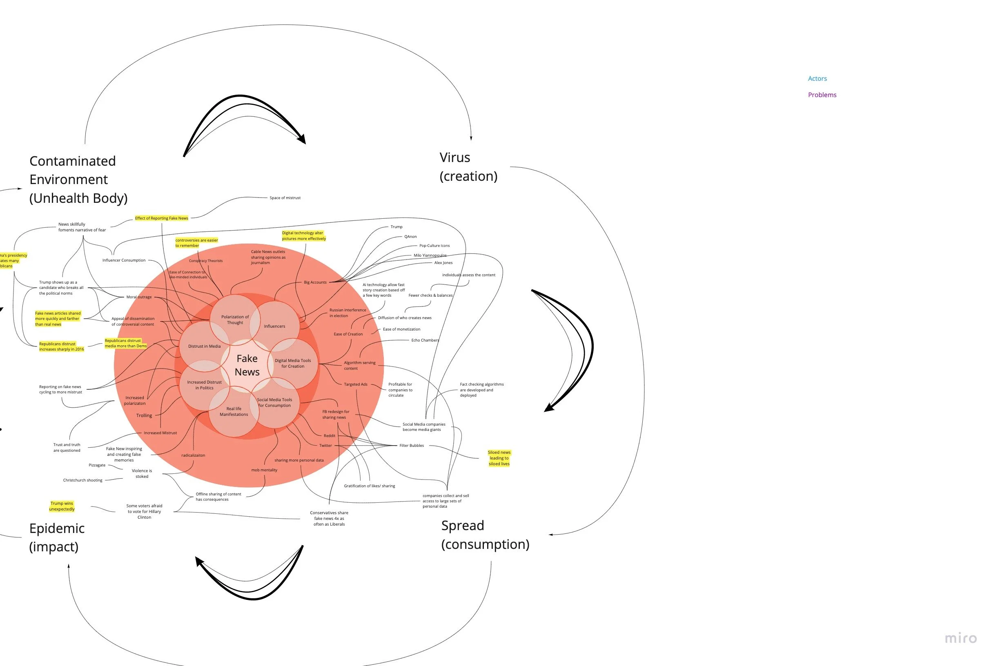
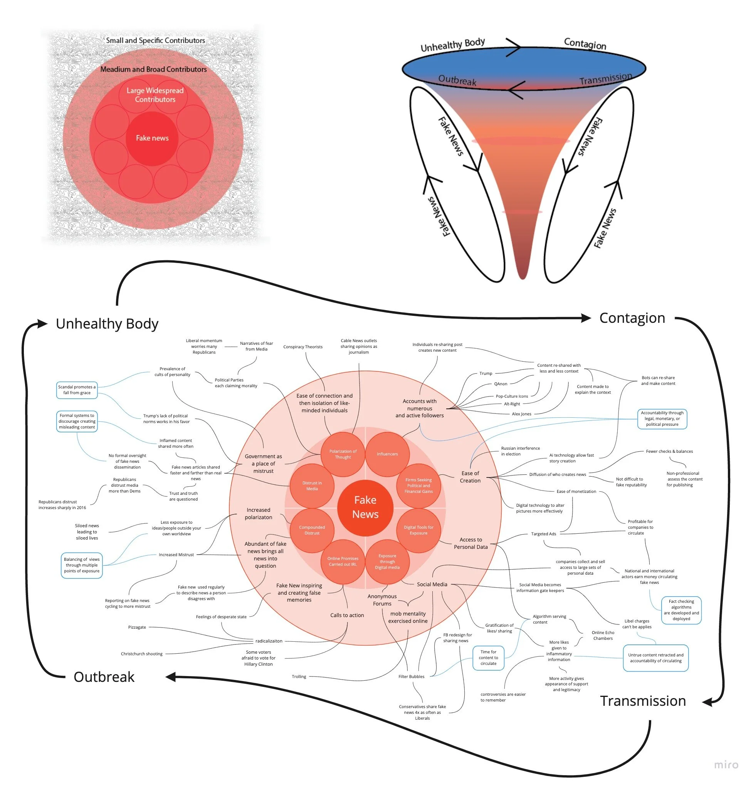

Fake News Visualization
Project Goal
The project's goal was to represent the wicked problem of fake news visually. Using the metaphor of sickness, I created a 3-dimensional giga-map expressing some of the flows within fake news and the feedback loops within the system.
Learning Outcomes
Using metaphor as the base of an illustration can be a powerful tool to communicate a theme without the need to state it explicitly. While the graphs did show some of the relationships of fake news, the most significant learning was just how difficult it can be to communicate a wicked problem.
View fullsize

